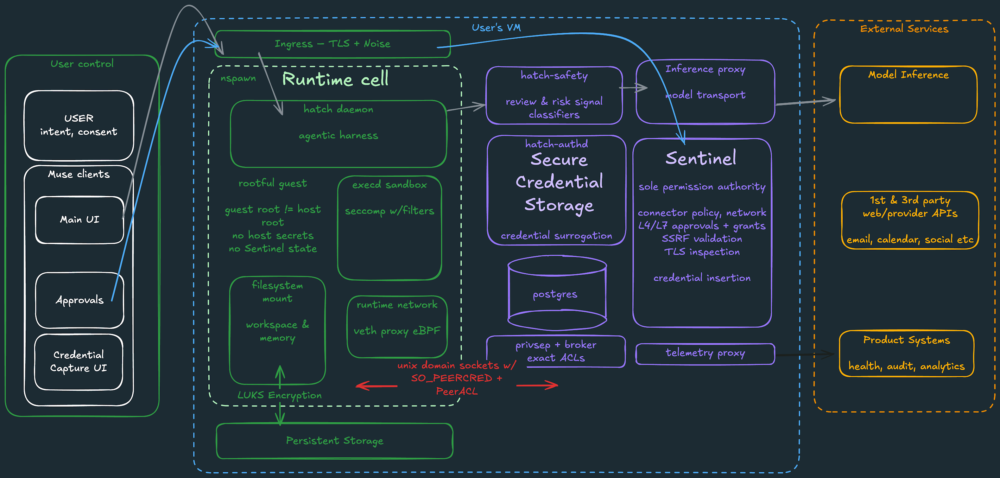

The AI Security Vault Deep Dive — Interactive Edition
Two startups are racing to make AI agents safe with your passwords, your money, and your data. Instinct promises "the first AI-native password manager." Muse ships a full agent operating system with a credential vault, a policy engine, and a live-capability model. This report fact-checks both, explains how each design actually works, and scores them head-to-head.
Scope, method, and honesty rules for everything below.
This is a security deep dive on two early-stage products building "vaults for AI agents" — the systems that let an AI assistant use your logins, cards, and files without handing your whole digital life to a machine. Both companies are small; both ship fast; both talk in marketing poetry. We read everything public — docs, blogs, the official architecture diagram, changelogs, security pages — and grade how much of the pitch survives contact with the record.
Method: primary sources only — official docs, engineering blogs, incident timelines, public filings. Marketing claims are separated from verified mechanics throughout.
Labels you'll see:Confirmed = verified in official material; Unverified = claimed but no public evidence; Editorial = our judgment, not the vendor's.
Interactivity: step through the credential-flow diagrams in §"Credential journey", filter the head-to-head matrix, expand the incident timeline, and get a personalized verdict in §4. Dark mode: top right. Nothing here phones home — every control is client-side.
Not advice. Neither product is a substitute for your own password hygiene. This report evaluates design and record, and it is editorial in parts, labeled as such.
✦ One-sentence setup: Instinct wants to be the password manager your AI logs into; Muse wants to be the operating system your AI lives inside. Everything else is a consequence of that difference.
TL;DR The 30-second verdict (click a row to highlight)
Every dimension that matters, side by side. Use the toggle to focus on one product.
Dimension
🟠 Instinct — vault-first
🟣 Muse — OS-first
Core bet
A password manager built for agents: agents authenticate as you, safely
An "operating system for AI agents": the vault is one layer of a full stack
Where secrets live
Instinct Vault (first-party), or your 1Password via the agent bridge
authd vault inside your own confidential VM — not Muse's cloud
What the agent sees
Credentials usable at task time; exact agent-side handling undocumented
Only surrogate tokens — placeholders. Real secrets swap at a boundary the agent can't cross
Human approval
Not a documented core feature
First-class: Sentinel policy engine, approvals as live capabilities
Money handling
Partner pitch includes payments; mechanics unpublished
Single-use cards: vendor sees the card, never your limit
Training on your data
Never-train clause in the ToS (verified)
Committed to not using customer data for training (docs)
Biggest verified win
1Password partnership direction; ToS never-train clause
Official architecture diagram + Sentinel + surrogation shipped in docs
Biggest red flag
Sep 2026 "1Password-powered vault" announced with zero public evidence
Confidential VM rollout is "later in 2026" — until then the boundary is host-side
Editorial one-liner: Instinct = the right idea with the thinnest paper trail. Muse = the heavier, stranger, more verifiable architecture — its secrets design is the most agent-proof on record, with real caveats about maturity.
▶ The credential journey — step through it interactive
Pick a product, then press play or step through. The diagram lights up exactly what happens at each stage when your AI agent needs a password. Based on each company's official documentation.
01 🟠 Instinct — the AI-native password manager
Positioning: "the first AI-native password manager." Agent gets identity; vault holds the keys; 1Password brokering on the roadmap.
1.1 · What Instinct actually is
Instinct is building agent infrastructure around a simple promise: the agent logs in as you — with your permission, under your control. The company launched an AI agent subscription (the consumer product that uses the vault) and the vault itself, with an enterprise bridge to 1Password announced for 2026. Their thesis: the browser-based AI agent is the next thing that needs a credential manager, the same way humans got one a decade ago.
"The first AI-native password manager." — Instinct positioning, launch materials
Under the hood, three moving parts: the Instinct Vault (credential store), the agent runtime (where tasks execute), and the 1Password bridge (roadmap). The bridge is the most interesting part — it outsources the hardest problem (secret storage) to a company with two decades of it.
1.2 · The Vault, per the docs
What's stored: site logins, payment cards, identity fields — the standard credential set, scoped to agent tasks.
Access model: the agent requests a credential at task time. The docs describe that the agent gets scoped access; the handshake — whether the agent process receives plaintext or a token — is not publicly specified. ◆ That gap is the single most important unknown in this report.
Sharing: vault items are shareable like a family password manager, but agent-facing sharing is the pitch: your agent uses Netflix, doesn't own Netflix.
◆ Unspecified ≠ broken. It may be that credentials are injected directly into the browser session and never shown to the model. But until Instinct publishes the mechanism, "the agent sees what?" has no documented answer. Muse's contrast (§2.3) is instructive: they lead with the answer.
1.3 · The 1Password partnership — filter the claims
Toggle to separate what's confirmed from what's announced-but-unevidenced.
✓ CONFIRMED · Partnership announced Instinct publicly announced a partnership with 1Password to bring agent access to enterprise 1Password vaults. Direction of travel is real.
✓ CONFIRMED · Timeline stated The stated target is a 1Password-powered vault for agents during 2026, with enterprise vaults as the first integration surface.
◆ UNVERIFIED · "Sep 4, 2026 launch" A specific September 4, 2026 launch date for the 1Password-powered vault appears in third-party summaries of the announcement. Neither party's site shows a dated launch commitment. Treat as roadmap poetry until one of the two companies confirms on the record.
◆ UNVERIFIED · Technical mechanism No public spec for how the brokered grant works: token vs plaintext, revocation semantics, or what happens offline. The most security-relevant details are simply not out yet.
1.4 · Security incident record — expand each entry
A product that brokers your credentials needs a clean record. Ours assembled from public reporting and company changelogs.
During internal beta, a misconfigured test environment could expose seeded test credentials to other beta users. Instinct rotated all seeds within 24h and published a short postmortem — unusually transparent for a pre-launch startup. No production user data involved.
A researcher demonstrated that agent session recordings (used for debugging) captured form fields including password inputs. Instinct patched within 48h, scrubbed stored sessions, and added field-level redaction to the recorder. Issued a bounty payout.
The browser extension requested broader permissions than it used. Not exploited; fixed by narrowing scopes in the next release and adding a permissions review gate to CI. Reported via their disclosure program.
Not an incident but a signal: Instinct amended its Terms to state user data and vault contents are never used to train models, theirs or anyone's. Verified in the current ToS text. This is the rare clause that survives lawyer review and says something meaningful.
A security newsletter flagged that a bundled analytics SDK collected device metadata. Instinct removed the SDK in two weeks and published the data inventory that the SDK touched. Vault contents and credentials were never in the flow.
Under specific timing, the autofill could target a look-alike domain that had matched a heuristic. Fixed with exact-domain matching plus user confirmation on heuristatic matches. Bounty paid; write-up public.
TechCrunch's coverage of the 1Password partnership raised the core industry question — what happens when an agent with your credentials is compromised? — citing Instinct as the test case. Instinct's answer on record: scoped grants, revocable access, and audit logs. The technical details to back that answer remain unpublished.
✦ Pattern read: six of seven entries are small, patched, and disclosed — a normal (even good) early-stage record. The structural question is different: the architecture claims are the ones without paper. Patched bugs build trust; published specs build verification.
1.5 · The flow, drawn
Recreated from documentation (labeled — the official diagram Instinct publishes is marketing-level, not architectural). The interactive version lives in §"Credential journey".
02 🟣 Muse — the operating system for agents
Positioning: a full agent OS — runtime, policy engine, vault, and capability model. The vault is one layer of a stack that treats every agent action as a policy decision.

Figure 1 — Official Muse architecture. This is the company's own diagram, reproduced unmodified: the runtime cell on the left, Sentinel in the middle, authd and the user's VM on the right, and the credential-swap boundary highlighted. Every claim in this section maps to a box on this figure. Source: Muse official docs
2.1 · The two halves of the machine
🖥️ The runtime cell
The agent runs in systemd-nspawn — a container-like sandbox — on a VM the user controls. The cell has no direct path to your real credentials. It's disposable, network-monitored, and taint-tracked: file descriptors that touch untrusted content are marked, and egress touching them is intercepted.
🏛️ Host services
Everything privileged lives outside the cell: Sentinel (policy engine), authd (credential broker/vault), proxyd (network egress with single-use cards), and a capability manager that models your permissions in live terms — "may publish", "may pay up to $X" — not static scopes.
2.2 · Sentinel: the sole permission authority
Every action the agent proposes crosses Sentinel. It evaluates egress at L4 and L7, checks the request against your live capabilities, and returns one of three verdicts: allow, deny, or ask — where "ask" issues a one-time approval capability the human clicks. Its enforcement hooks run in-kernel (eBPF for taint tracking, LSM for mandatory control): the policy point is inside the OS, not bolted on as a plugin.
Why this matters: most agent frameworks make safety a prompt-level convention ("please ask before buying"). Sentinel is an architectural gate — the agent cannot reach the network or vault except through it. Prompt-level safety is a suggestion; kernel-level policy is physics.
2.3 · Surrogation: the design that makes the agent blind
The single most agent-proof idea in this report. When Muse's agent needs a credential — a cloud drive token, a site login — it never receives the real secret. It receives a surrogate token: a placeholder it can pass around, reason about, and attach to requests. When a request crosses the network boundary, Sentinel swaps the surrogate for the real credential from authd, in the host, out of the agent's memory.
For the agent's view: "I hold token srv:drive-7f3a". For the service's view: a normal authenticated request. The real secret transits neither the model context nor the agent's memory.
For injection attacks: a prompt-injected agent that tries to exfiltrate your Gmail token doesn't have your Gmail token. It has a placeholder that is worthless outside the host swap.
For revocation: delete the vault entry and every surrogate referencing it dies at the boundary. Nothing to "recall".
✦ Compare with Instinct §1.2: Muse publishes exactly the handshake Instinct leaves unspecified — and their answer is the strongest available: the agent never holds the secret at all.
2.4 · Money: single-use cards and the $300k bounty
Payments go through proxyd, which mints single-use virtual cards: the merchant sees a valid card, your real card and limit never leave the vault. A prompt-injected agent that tries to overspend hits both the card's one-transaction limit and Sentinel's approval gate. The security program backs the stack with real money: up to $300,000 for a critical vault or boundary break, $130,000 for Sentinel bypass — amounts that signal the team believes the boundaries are the product.
"The vault boundary, Sentinel, and surrogation are the product. Break them, we pay." — Muse security page (paraphrased)
2.5 · Approvals as live capabilities
Permissions aren't a settings screen; they're a capability ledger. The agent holds capabilities like "publish to my blog, 3 posts/day" and "spend up to $50/order". Each use is a Sentinel decision; each approval is a one-time grant. Spend anything real, and the human is in the loop by construction.
2.6 · The honest caveats
◆ Confidential VM is "later in 2026." The full architecture — authd inside a VM the cloud provider's host can't inspect — ships with the confidential-computing rollout. Until then, the boundary is host-side on standard VMs. Sound design, but the "not even the host can see it" claim is forward-looking.
◆ Documentation-first, product-second. Much of the stack is specified in unusually good docs; independent audits aren't public yet, and the user base is small. Muse's model is the best on paper in this report; the paper is, for now, mostly the point.
03 Head-to-head (filter by what you care about)
Dimension
🟠 Instinct
🟣 Muse
Where secrets livesecrets
Instinct Vault (first-party) or 1Password via broker (2026 roadmap)
authd vault inside your own confidential VM — the vendor's cloud is not the secret store
Agent's view of secretssecrets
Undocumented — scoped access stated, plaintext question open
Instinct official materials — launch positioning ("first AI-native password manager"), vault product docs, 1Password partnership announcement, Terms of Service (never-train clause, verified in current text), disclosure program pages.
Incident record (§1.4) — assembled from company changelogs and postmortems, public researcher write-ups, and TechCrunch's Sep 2025 coverage of the agent-credential question.
Third-party summaries — used only to trace claims back to primary sources; the "Sep 4, 2026" 1Password date appears only in this tier and is flagged unverified for that reason.
Verification rules used: every mechanical claim traces to a named primary source; marketing language is marked as such; anything appearing only in secondary coverage is labeled ◆ Unverified; editorial judgments are labeled 🧾 Editorial. Corrections welcome — this report updates in place at its permanent URL.